Comment Reverse du .Net facilement
[//]: <> (Created By Vozec 23/10/2021)
Nécessaires
Introduction
.Net est un langage assez facile à reverse en général. Grâce à de simples outils comme JetBrain Dotpeek , DnSpy ou Ilspy , on peut facilement débugger , éditer , patcher un assembly sans soucis . La principale difficulté et la multitude de protection qui existe autour du Framework de Microsoft (.Net Framework/Core). Nous allons donc voir quelles sont les principales sécurités et comment les contourner.
Vocabulaire
Pour simplifier la lecture et la compréhension, nous allons définir ce vocabulaire :
-
Obfu : “obfuscate” : Le code n’est pas lisible ou difficilement
-
Packer : Un packer est un logiciel qui permet de packer des assembly .net
- Un assembly packé et un assembly englobé dans une machine virtuelle crée pour l’exécutable
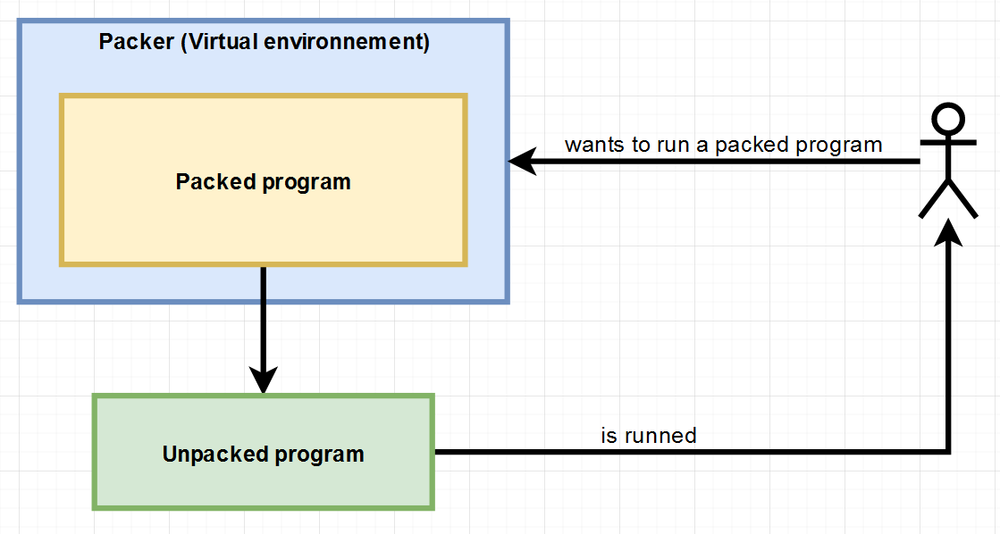
- Un assembly packé et un assembly englobé dans une machine virtuelle crée pour l’exécutable
-
Dump : Un Dump de manière général est une copie. Dans notre cas, ce sera une copie de la mémoire RAM de votre pc. Quand on dump un processus, on copie tout ce qui touche à ce processus dans la mémoire vive.
-
Breakpoint/Point d’arrêt : Endroit d’un programme ou celui-ci va se figer, c’est utile pour mettre en pause un programme et l’analyser à un endroit précis.
Debugging
Nous avons la possibilité de debugger notre code grâce à DnSpy par exemple .
Il est primordial de comprendre et de savoir utiliser cet outil pour la suite .

C’est très utile pour récupérer la valeure d’une variable secrète, uniquement définie dans le code et non affichée dans la console.
Reverse
La première chose à faire quand on veut reverse un assembly et de connaitre quel compilateur a était utilisé , Pour ce faire , on utilise DIE , (DetectItEasy)
Disponible dans le pack plus haut
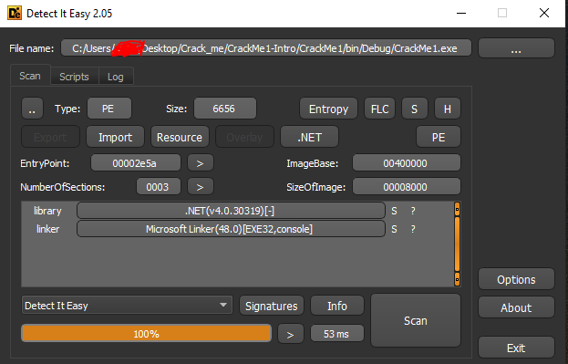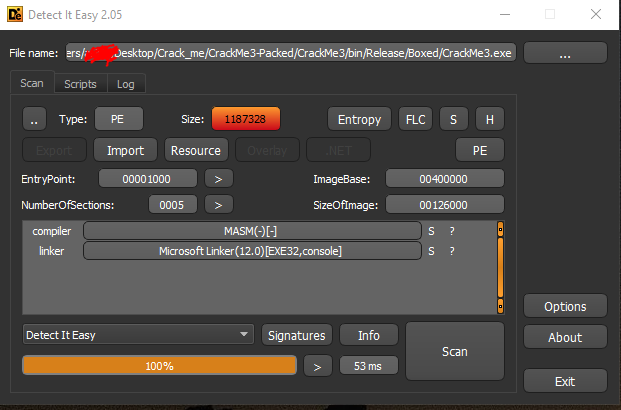
On remarque bien la différence entre un exécutable packé et un autre non packé
On retrouve aussi cette différence sur DnSpy :
(En Haut les class visibles du premier .exe et en dessous , le deuxième .exe qui ne semble pas ‘debuggable’)
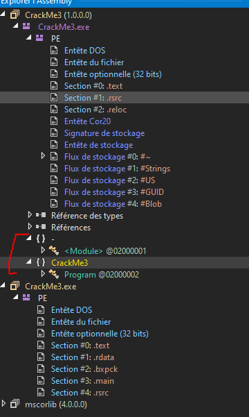
Packer :
Si vous êtes dans le cas n°2 , vous avez uniquement ‘PE’ sur DnSpy Il y a 2 possibilités, la première est que votre assembly n’est pas en .Net , si c’est le cas ; que faites-vous là ? Sinon , c’est que votre assembly est packé , il nous faut donc l’extraire pour avoir se retrouver dans le cas similaire au premier .exe du screen .
Deux Solutions se présentent à vous
La première est de trouver le packer utilisé. Dans nos futur cas, le packer utilisé sera BoxedAppPacker qui est facilement réversible pour vos premier crackme : Boxed_Unpacker
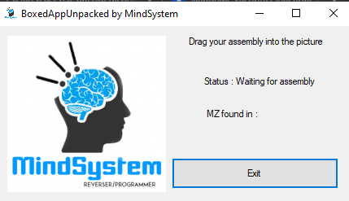
La seconde est d’utiliser un Dumper pour reconstruire à partie de la mémoire un .exe qui a déjà était extrait (voir définition packer plus haut) . On aura ainsi le .exe original sans toutes la VM autour.
De manière plus général, on peut utiliser des ‘dumper’ comme :
- MegaDumper.exe
- ExtremeDumper.exe (Le plus user-friendly)
- X64NetDumper.exe (La base de tous les autres)
- Nemesis.exe
Il ne faut pas hésiter à modifier le nom de votre dumper. Les programmes étant connus, certaines protections kill le programme si elles détectent un processus de dump :
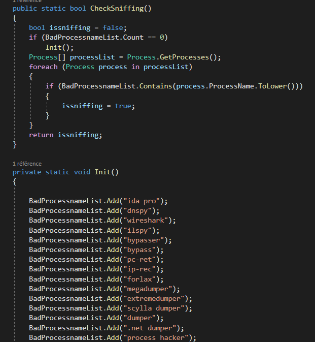
Ils se présentent généralement de la même façon avec des options identiques
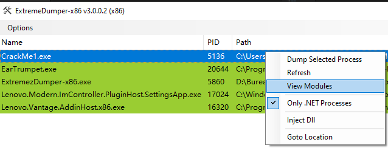 
Ouvrons à présent notre assembly avec un code visible.
- Si vous avez un code propre comme sur le Screenshot précédent, vous avez fini !
- Sinon , vous n’avez pas de chance .. le code est obfusqué .. Alors désobfusquons le :)
Désobfuscation
Là encore on retrouve deux méthodes pour parvenir à nos fins:
- Tous faire à la main
- Utiliser les bons outils
La solution évidente est la 2nd car même si il est possible de débug du code obfusqué, c’est un vrai cauchemar ..
Il faut déterminer quel outils a était utilisé .
La première chose est de regarder le code , les outils d’obfuscation laissent souvent des traces

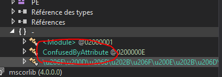
Là, une recherche google est toujours utile pour voir si un Tool pour reverse cette obfucation en particulier existe déjà.
Ce site par exemple est très utile : .NET Deobfuscator
Si vous ne trouvez pas de Tool ,il y a De4dot ! C’est un outils qui gère, analyse et simplifie beaucoup le code.
On peut donc décoder le .exe grâce à ces outils génériques :
- De4dot
- Rzy Protector V2 Unpacker
- ConfuserEx-Unpacker-v2.0
- AntiDecompiler Cleaner
(Même si vous trouvez un outil pour désobfusquer votre code, un passage dans De4dot est toujours une bonne chose , ne serait-ce que pour le renommage des class par exemple)
Il faut donc tester chaque outils plusieurs fois et voir si le fichier de sortie fonctionne toujours et si le code est mieux qu’avant.
Il faut alterner , passer dans l’un , puis dans l’autre et voir si le code devient plus clair. C’est le cas dans la plupart du temps.
Même si le programme n’est pas packé , un dump peut toujours simplifier les choses .
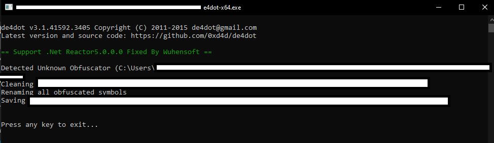
On peut bypass l’obfuscation du .exe sans sauvegarder le process .(Cas Rare) L’idée est de débug le .exe jusqu’a ce qu’il passe toute les sécurités puis reconstruire l’assembly sans ces sécurités tout en gardant le processus ouvert pour ne pas ré-avoir l’obfuscation dans le nouveau processus:
Comment ?
On met un breakpoint après la sécurité . On peut modifier les instructions IL et on relance le programme avec la flèche du haut. Là , Dnspy va recréer un code à partir de là ou il était et donc vous aurait votre code débusqué .Le soucis est que vous devez tous faire en runtime par la suite : si vous sauvegarder votre .exe , il ne fonctionnera pas . Vous devez donc debug a partir de la ou vous en êtes , Comme ceci :
Cette méthode fonctionne mais n’est pas très propre et rarement utilisé
Sinon:
On peut aussi aller sur YouTube et voir comment dump manuellement un type d’obfuscation, c’est très spécifique a chacun et le breakpoint et difficile a bien placer.
Anti-Dump et Anti-ILDasm
C’est deux protection empêche le bon fonctionnement des étapes d’avant (le dump et l’utilisation d’outils) .
Nous devons donc supprimer ces protections à la main avant de retenter les étapes précédentes.
Il faut savoir que ces protections sont au tout début de l’obfucation.
Nous allons donc faire :
Clic Droit (dans l’explorateur de solution) > aller au .cctor et Placer un breakpoint après la première sécurité .On peut ensuite Debug et une fois arrivé au breakpoint , sauvegarder le .exe . (Section module en bas)
On réouvre le nouveau .exe et on supprime la ligne qu’on a passé grâce au instruction IL et on re-sauvegarde . Là , la protection sera passé :)
Illustration :
DLL Hijacking
C’est de loin ma partie préférée, J’ai écris un article ici !
Contournement de Code Interne
L’obfuscation se fait à la fois dans le code et à l’extérieur avec différents outils évoqués plus tôt. Nous allons voir comment contourner ces protections directement placées dans le code : Imaginons qu’il y ai un Anti-Debug , celui ci fonctionne à partir du moment où il est activé . Nous pouvons donc aller jusqu’à ce moment puis empêcher l’exécution de cette sécurité. 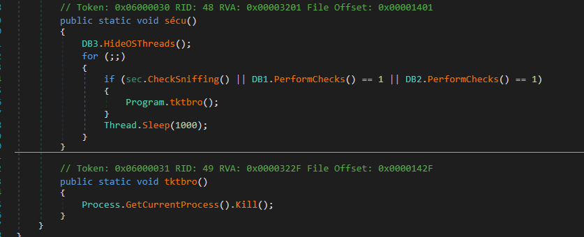 Ici, nous devrions empêcher l’exécution de la fonction “sécu()” . On peut donc faire plusieurs chose.
La première
Est de faire un patch : sur dnspy on peut éditer une class est ainsi on pourrait empêcher l’execution. Cette technique marche uniquement si tous le code est propre . Sinon, la recompilation ne sera pas possible.
 On pourrait aussi supprimer les actions de “tktbro()” ou modifier la string qui est comparée dans le début du code pour valider la condition du if
On pourrait aussi supprimer les actions de “tktbro()” ou modifier la string qui est comparée dans le début du code pour valider la condition du if
La deuxième
Est plus facile , elle consiste à modifier les variables du programme lors de son exécution (=“en runtime”) .
Dans notre exemple, la fonction sécu() se lance uniquement si 2 variables sont différentes. Une solution serait d’aller grâce à un point d’arrêt à la comparaison et de modifier les valeurs de sorte que la fonction ne soit pas lancée .
On met dont un point d’arrêt sur le if puis on click sur le != pour arriver dans la fonction de comparaison et on place à nouveau un breakpoint.

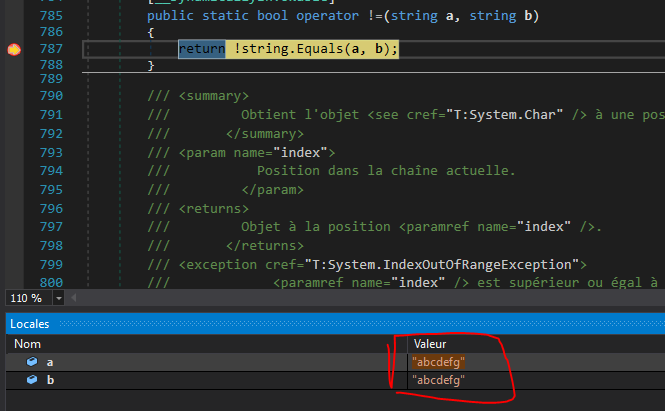
Conclusion
Pour désobfusquer un assembly en .net , il faut :
- Vérifier qu’il packé.
- Si oui, le unpack (Dump / Tools automatiques)
- Regarder si le code est désobfusqué :
- Si ce n’est pas le cas : regarder et chercher un désobfuscateur adapté pour votre assembly .
- Si vous ne trouvez pas, jouez entre faire des dumps et utiliser des outils comme D4dot
- Si vous n’avez que des erreurs, dumper manuellement votre process et patché le jusqu’à ce que les outils fonctionnent dessus.
- Si vous ne parvenez un rien, utiliser les DLL pour récuperer les informations que vous cherchez.
J’ai créé 9 Crackme :
- CrackMe1 - Intro
- CrackMe2 - Debugging
- CrackMe3 - Packed
- CrackMe4 - Basic Obfuscation
- CrackMe5 - Anti-Debugging
- CrackMe6 - Dll Hijacking
- CrackMe7 - Apps are cools
- CrackMe8 - Manual Dump
- CrackMe9 - Final